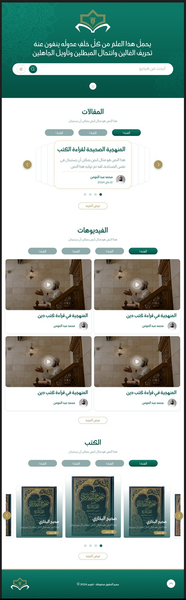
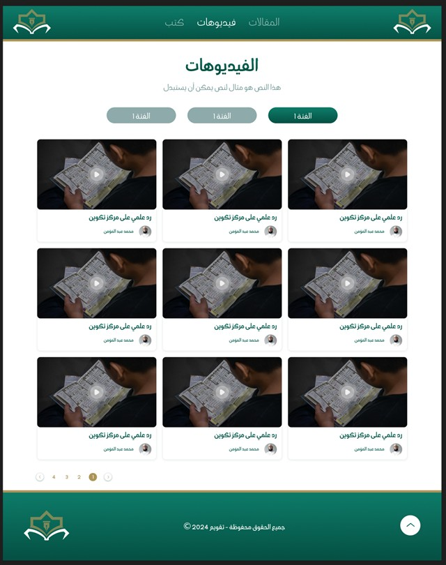
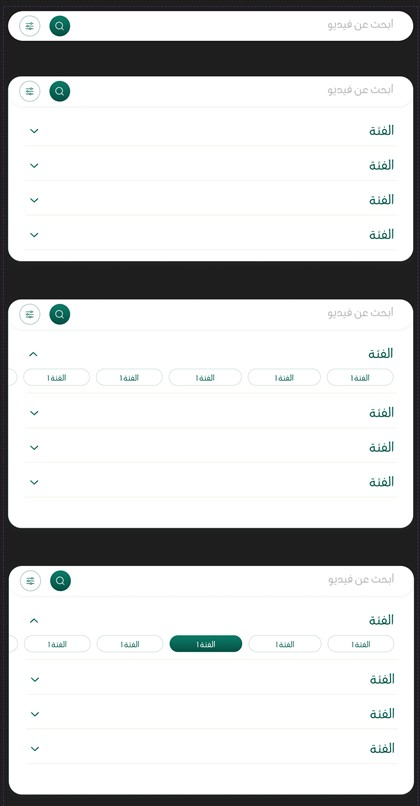
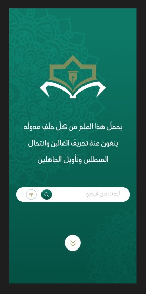

What you said, and what changed
v4: new art direction, “ink, paper & colour blocks”, after studying podcast and editorial brands on Behance/Dribbble (Thmanyah, Paperpillar). Flat colours that each mean a kind of content — emerald for the دلائل النبوّة series, terracotta for Taqbaylit, cobalt for short clips, saffron for play/continue — on paper and ink. New components: a bento home grid, branded covers with giant outlined episode numbers, an album-style track list, colour playlist tiles and a saffron mini-player pill. IBM Plex stays (round 4). Details on the design system board.
v3: the landing-page pattern is gone. The newest episode is the hero; “continue watching” sits in the header and on the home page; a mini-player keeps playing across pages; instant search opens anywhere (press /); the series panel shows your progress; the home page is about a third shorter. Reasoning on the UX rethink board.
v3: Thmanyah’s licence forbids re-hosting its font, so it could not be used on the canvas. After comparing 14 Arabic sans families against its headline style, IBM Plex Sans Arabic was the closest; in round 3 you chose to keep it. It is now the single font for all Arabic text.
New direction built from research (see the References board): warm paper grounds, a Maghrebi arch and zellige signature, editorial headline type, and generous spacing. The Figma logo, green and gold are kept.
The hero now leads with the series title دلائل النبوّة in large Amiri, an arch-framed latest episode you can play directly, two floating cards (newest Taqbaylit video, playlist progress), and a search bar that overlaps the hero’s edge.
All copy now speaks of videos (مقاطع), episodes (حلقات) and playlists (قوائم التشغيل). The site is organised around the Dala’il an-Nubuwwa playlist plus the sheikh’s other videos in Arabic and Taqbaylit. A new playlist page replaces the old “series” idea.
Readex Pro is gone. Headlines use Amiri (classical Naskh), interface text uses IBM Plex Sans Arabic, and Taqbaylit uses Noto Serif Display + Inter — the only families I found that contain every Kabyle letter. Four pairings are compared on the System board.
Same palette, new balance: warm off-white and sand dominate; deep green appears once per screen (the arch, the player) as the signature, gold only for lines and numbers.
Quiet motion only: staggered rise-in on load, a slowly turning eight-point star inside the arch, floating cards, a soft pulse on the play button, and hover lifts on cards. Everything stops with the reduced-motion setting.
The Figma file, as rendered
One page holding about fifteen frames. I reviewed high-resolution renders of every frame and sampled colours from the pixels.
Not inspected: layer names, font names, components and variables — the file’s structure data was too large to retrieve through my Figma connection. Typography was identified by eye, colours by pixel sampling.




Worth keeping
RecommendationThe green-and-gold brand
#0C7765 → #055245 with muted gold #AD9559 is distinctive and calm. Kept as the accent system in v2.
The logo and “علم نافع” wordmark
Book and pen inside an eight-point frame. Its eight-point star now drives the zellige pattern and the motion.
Arabic-first, consistent RTL
Nav, cards and pagination mirror correctly — a solid base.
Restrained ornament
The arabesque sits at low opacity; gold hairlines frame sections. v2 keeps the restraint.
Search in the hero
Right instinct. v2 makes it the bridge between hero and content, and designs the results.
Worth reconsidering
RecommendationThree equal silos, video second
Articles → Videos → Books gives video a third of the page; the goal is video-first.
A hero with no video
On mobile the whole first screen is tagline and search.
Thin cards, repeated author
With one sheikh, the avatar slot should carry duration, episode number, date and language.
Carousels hide the library
Prefer grids and scrollable rails that show many videos at once.
No video page
The most important page — watching — is not designed.
Contrast failures
White on sage ≈ 2.5:1, gold text on white ≈ 2.9:1. v2 adds a text-safe gold (#7A6532).
No language switcher
Taqbaylit needs a first-class, left-to-right version.
A calm, searchable home for the sheikh’s videos — the دلائل النبوّة playlist in order, and his other videos in Arabic and Taqbaylit — watched here, without distraction.
Why: today the videos live in feeds designed for endless scrolling. A first-party home keeps the series in order, makes every video findable, presents it with dignity, and reduces dependence on platforms the project does not control.
Four principles for every screen
Video first. A playable video is on the first screen of every device.
In order, then in reach. The series is followed episode by episode; everything else is one search away.
Two languages, two directions, one product. Missing translations are labelled, never hidden.
Quiet dignity. No ads, autoplay feeds, counters or social mechanics.
The five decisions that shape everything else
Open questionsVideo rights & masters
Does the project own the original files, or only the platform uploads?
Hosting path
Privacy-enhanced embeds first, a managed video service, or self-hosted?
Series structure
Is دلائل النبوّة one ordered list, or grouped into sections (محاور)?
Language model
Separate Taqbaylit videos, or Taqbaylit captions on Arabic ones — or both?
Transcripts
Will captions exist? They unlock search inside videos, accessibility and SEO.